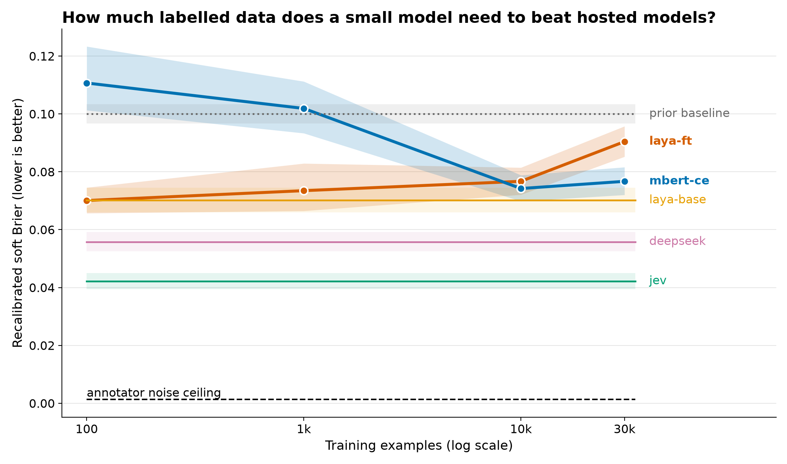
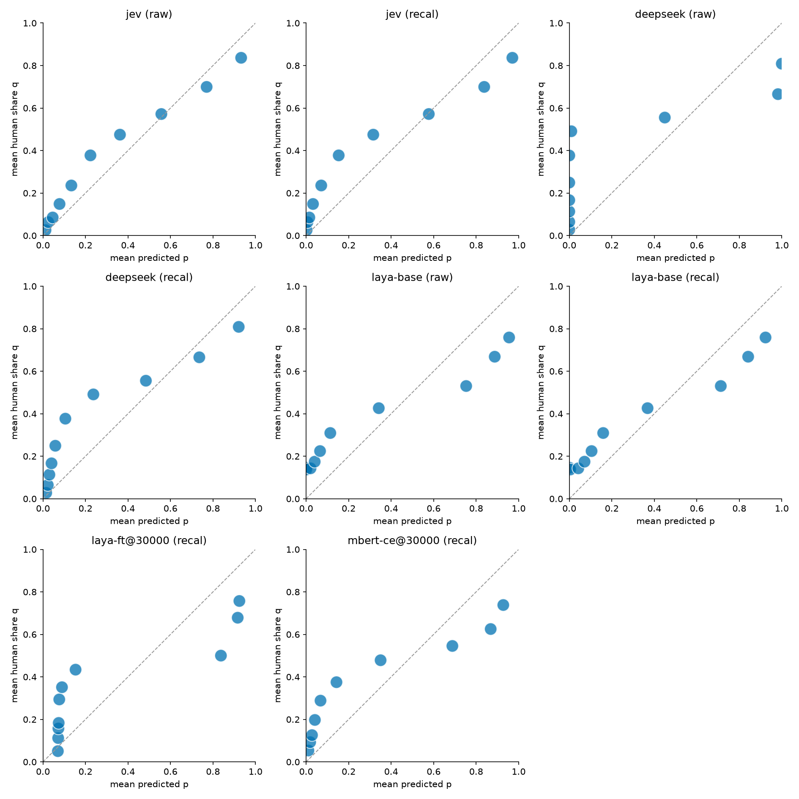

Does 70% mean 70% of people agree? Soft Brier score against the full human label distribution, for fine-tuned small models vs hosted models.

No training size was found at which laya-ft beats the best hosted model.
laya-ft@30000 - jev (recal): difference in recalibrated soft Brier (first minus second) is 0.0482, 95% CI [0.0431, 0.0534], p = 0.000. The second arm named has the lower (better) recalibrated soft Brier; the 95% interval excludes zero.
Soft Brier, JS, ECE and noise-floor excess; lower is better. 95% CIs in brackets.
| Arm | Calibration | Soft Brier [95% CI] | JS | ECE | Noise-floor excess [95% CI] |
|---|---|---|---|---|---|
| jev | raw | 0.0325 [0.0303, 0.0347] | 0.1363 | 0.0710 | 0.0312 [0.0290, 0.0334] |
| jev | recal | 0.0422 [0.0395, 0.0450] | 0.1597 | 0.1101 | 0.0409 [0.0382, 0.0437] |
| deepseek | raw | 0.1026 [0.0975, 0.1081] | 0.2917 | 0.2143 | 0.1013 [0.0962, 0.1068] |
| deepseek | recal | 0.0558 [0.0525, 0.0592] | 0.1769 | 0.1215 | 0.0545 [0.0512, 0.0579] |
| laya-base | raw | 0.0794 [0.0747, 0.0842] | 0.2216 | 0.1609 | 0.0781 [0.0734, 0.0829] |
| laya-base | recal | 0.0702 [0.0660, 0.0745] | 0.2085 | 0.1324 | 0.0689 [0.0647, 0.0732] |
| laya-ft@100 | raw | 0.0955 [0.0550, 0.1252] | 0.2671 | 0.1745 | 0.0942 [0.0537, 0.1238] |
| laya-ft@100 | recal | 0.0701 [0.0657, 0.0745] | 0.2101 | 0.1311 | 0.0688 [0.0644, 0.0732] |
| laya-ft@1k | raw | 0.0762 [0.0609, 0.0910] | 0.2250 | 0.1425 | 0.0749 [0.0596, 0.0897] |
| laya-ft@1k | recal | 0.0735 [0.0665, 0.0829] | 0.2192 | 0.1372 | 0.0722 [0.0652, 0.0816] |
| laya-ft@10k | raw | 0.0937 [0.0883, 0.0992] | 0.2439 | 0.1918 | 0.0924 [0.0870, 0.0979] |
| laya-ft@10k | recal | 0.0767 [0.0721, 0.0814] | 0.2177 | 0.1441 | 0.0754 [0.0708, 0.0801] |
| laya-ft@30k | raw | 0.1123 [0.1062, 0.1186] | 0.2652 | 0.2228 | 0.1110 [0.1049, 0.1172] |
| laya-ft@30k | recal | 0.0904 [0.0852, 0.0957] | 0.2307 | 0.1754 | 0.0891 [0.0839, 0.0944] |
| mbert-ce@100 | raw | 0.1250 [0.1126, 0.1360] | 0.2971 | 0.1329 | 0.1237 [0.1113, 0.1347] |
| mbert-ce@100 | recal | 0.1107 [0.1013, 0.1233] | 0.2945 | 0.0888 | 0.1094 [0.0999, 0.1220] |
| mbert-ce@1k | raw | 0.1576 [0.1475, 0.1691] | 0.3302 | 0.2627 | 0.1563 [0.1462, 0.1678] |
| mbert-ce@1k | recal | 0.1019 [0.0933, 0.1112] | 0.2488 | 0.1435 | 0.1006 [0.0920, 0.1099] |
| mbert-ce@10k | raw | 0.0970 [0.0915, 0.1027] | 0.2445 | 0.1889 | 0.0957 [0.0902, 0.1014] |
| mbert-ce@10k | recal | 0.0742 [0.0698, 0.0788] | 0.2004 | 0.1320 | 0.0729 [0.0685, 0.0775] |
| mbert-ce@30k | raw | 0.1005 [0.0948, 0.1064] | 0.2562 | 0.2052 | 0.0992 [0.0935, 0.1051] |
| mbert-ce@30k | recal | 0.0767 [0.0720, 0.0816] | 0.2042 | 0.1526 | 0.0754 [0.0707, 0.0803] |
| prior baseline | — | 0.1000 [0.0967, 0.1034] | — | — | — |
| Arm | wording 1 | wording 2 | wording 3 |
|---|---|---|---|
| jev | 0.0441 | 0.0414 | 0.0411 |
| deepseek | 0.0618 | 0.0561 | 0.0495 |
| laya-base | 0.0687 | 0.0691 | 0.0727 |

| Comparison | Family | Diff | 95% CI | p | Holm p |
|---|---|---|---|---|---|
| laya-ft@30000 - jev (recal) | primary | 0.0482 | [0.0431, 0.0534] | 0.000 | — |
| laya-ft@100 - mbert-ce@100 (recal) | secondary | -0.0406 | [-0.0554, -0.0293] | 0.000 | 0.000 |
| laya-ft@1000 - mbert-ce@1000 (recal) | secondary | -0.0284 | [-0.0409, -0.0156] | 0.000 | 0.000 |
| laya-ft@10000 - mbert-ce@10000 (recal) | secondary | 0.0025 | [-0.0022, 0.0072] | 0.310 | 0.310 |
| laya-ft@30000 - mbert-ce@30000 (recal) | secondary | 0.0137 | [0.0089, 0.0185] | 0.000 | 0.000 |
| laya-ft@30000 - laya-base (recal) | secondary | 0.0203 | [0.0168, 0.0238] | 0.000 | 0.000 |
| Arm | USD per 1k decisions | Training GPU-hours | Training USD |
|---|---|---|---|
| jev | 0.0133 | — | — |
| deepseek | 0.0221 | — | — |
| laya-base | — | — | — |
| laya-ft@100 | 0.0042 | 0.02 | 0.01 |
| laya-ft@1000 | 0.0041 | 0.09 | 0.03 |
| laya-ft@10000 | 0.0040 | 0.82 | 0.29 |
| laya-ft@30000 | 0.0043 | 2.48 | 0.87 |
| mbert-ce@100 | 0.0026 | 0.05 | 0.02 |
| mbert-ce@1000 | 0.0026 | 0.07 | 0.02 |
| mbert-ce@10000 | 0.0026 | 0.20 | 0.07 |
| mbert-ce@30000 | 0.0026 | 0.59 | 0.21 |
Not preregistered as confirmatory; no multiplicity correction.
| Comparison | Family | Diff | 95% CI | p | Holm p |
|---|---|---|---|---|---|
| laya-ft@30000 - jev (raw) | exploratory | 0.0798 | [0.0741, 0.0857] | 0.000 | — |
| laya-ft@30000 - jev (isotonic) | exploratory | 0.0257 | [0.0215, 0.0300] | 0.000 | — |
| deepseek - jev (recal) | exploratory | 0.0136 | [0.0109, 0.0162] | 0.000 | — |